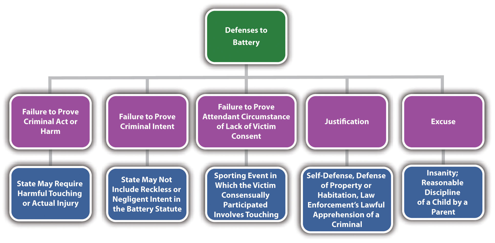
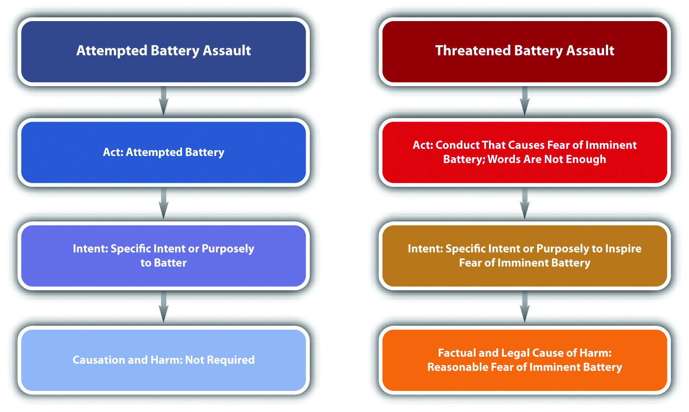
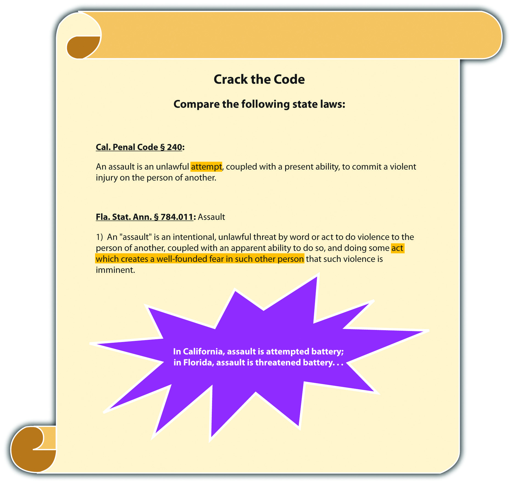

AssaultGenerally an attempted battery or a threatened battery, although some states and the Model Penal Code combine assault and battery into one statute called assault. and batteryAn unlawful harmful or offensive touching. are two crimes that are often prosecuted together, yet they are separate offenses with different elements. Although modern jurisdictions frequently combine assault and battery into one statute called assault, the offenses are still distinct and are often graded differently. The Model Penal Code calls both crimes assault, simple and aggravated (Model Penal Code § 211.1). However, the Model Penal Code does not distinguish between assault and battery for grading purposes. This section reviews the elements of both crimes, including potential defenses.
Battery is a crime that has the elements of criminal act, criminal intent, attendant circumstance, causation, and harm as is discussed in the subsections that follow.
The criminal act element required for battery in most jurisdictions is an unlawful touching, often described as physical contact.720 ILCS § 12-3, accessed February 18, 2011, http://law.onecle.com/illinois/720ilcs5/12-3.html. This criminal act element is what distinguishes assault from battery, although an individual can be convicted of both crimes if he or she commits separate acts supported by the appropriate intent. The defendant can touch the victim with an instrumentality, like shooting the victim with a gun, or can hit the victim with a thrown object, such as rocks or a bottle. The defendant can also touch the victim with a vehicle, knife, or a substance, such as spitting on the victim or spraying the victim with a hose.
Recall from Chapter 1 "Introduction to Criminal Law" an example where Chris, a newly hired employee at McDonald’s, spills steaming-hot coffee on his customer Geoff’s hand. Although Chris did not touch Geoff with any part of his body, he did pour a substance that unlawfully touched Geoff’s body, which could be sufficient to constitute the criminal act element for battery in most jurisdictions.
The criminal intent element required for battery varies, depending on the jurisdiction. At early common law, battery was a purposeful or knowing touching. Many states follow the common-law approach and require specific intent or purposely, or general intent or knowingly.Fla. Stat. Ann. § 784.03, accessed February 18, 2011, http://law.onecle.com/florida/crimes/784.03.html. Others include reckless intent,K.S.A. § 21-3412, accessed February 18, 2011, http://kansasstatutes.lesterama.org/Chapter_21/Article_34/21-3412.html. or negligent intent.R.I. Gen. Laws § 11-5-2.2, accessed February 18, 2011, http://law.justia.com/rhodeisland/codes/title11/11-5-2.2.html. Jurisdictions that include reckless or negligent intent generally require actual injury, serious bodily injury, or the use of a deadly weapon. The Model Penal Code requires purposely, knowingly, or recklessly causing bodily injury to another, or negligently causing “bodily injury to another with a deadly weapon” (Model Penal Code § 211.1(1) (b)). If negligent intent is not included in the battery statute, certain conduct that causes injury to the victim may not be criminal.
Review the example with Chris and Geoff in Section 10 "Example of Battery Act". Assume that Chris’s act of pouring hot coffee on Geoff’s hand occurred when Chris attempted to multitask and hand out change at the same moment he was pouring the coffee. Chris’s act of physically touching Geoff with the hot coffee may be supported by negligent intent because Chris is a new employee and is probably not aware of the risk of spilling coffee when multitasking. If the state in which Chris’s spill occurs does not include negligent intent in its battery statute, Chris probably will not be subject to prosecution for this offense. If Chris’s state only criminalizes negligent battery when serious bodily injury occurs, or when causing bodily injury to another with a deadly weapon, Chris will not be subject to prosecution for battery unless the coffee caused a severe burning of Geoff’s hand; hot coffee cannot kill and would probably not be considered a deadly weapon.
The attendant circumstance element required for battery in most jurisdictions is that the touching occur without the victim’s consent. Thus victim’s consent can operate as a failure of proof or affirmative defense in some factual situations.
Recall from Chapter 5 "Criminal Defenses, Part 1" the example where Allen tackles Brett during a high school football game, causing Brett to suffer a severe injury. Although Allen intentionally touched Brett, and the result is serious bodily injury, Brett consented to the touching by voluntarily participating in a sporting event where physical contact is frequent. Thus the attendant circumstance element for battery is absent and Allen is probably not subject to prosecution for this offense.
In addition to consent, there are also justification and excuse defenses to battery that Chapter 5 "Criminal Defenses, Part 1" and Chapter 6 "Criminal Defenses, Part 2" discuss in detail. To summarize and review, the justification defenses to battery are self-defense, defense of property and habitation, and the lawful apprehension of criminals. An excuse defense to battery that Chapter 6 "Criminal Defenses, Part 2" explores is the insanity defense. One other excuse defense to battery is the reasonable discipline of a child by a parent that is generally regulated by statute and varies from state to state.“United States statutes pertaining to spanking,” Kidjacked.com website, accessed February 18, 2011, http://kidjacked.com/legal/spanking_law.asp.
The defendant’s criminal act must be the factual and legal cause of the harm, which is defined in Section 10 "Battery Harm".
The harm requirement for battery varies, depending on the jurisdiction. Many jurisdictions allow for harmful or offensive contact.720 ILCS § 12-3, accessed February 18, 2011, http://law.onecle.com/illinois/720ilcs5/12-3.html. Some jurisdictions require an actual injury to the victim.Ala. Code § 13A-6-21, accessed February 18, 2011, http://law.onecle.com/alabama/criminal-code/13A-6-21.html. The severity of the injury can elevate grading, as is discussed in Section 10 "Battery Grading".
Review the example in Section 10 "Example of Battery Act" where Chris pours hot coffee on Geoff’s hand. If Chris and Geoff are in a state that requires actual injury to the victim as the harm element of battery, Chris will not be subject to prosecution for this offense unless the hot coffee injures Geoff’s hand. If Chris and Geoff are in a state that allows for harmful or offensive contact, Chris may be charged with or convicted of battery as long as the battery intent element is present, as discussed in Section 10 "Battery Intent".
Figure 10.6 Diagram of Defenses to Battery
At early common law, battery was a misdemeanor. The Model Penal Code grades battery (called simple assault) as a misdemeanor unless “committed in a fight or scuffle entered into by mutual consent, in which case it is a petty misdemeanor” (Model Penal Code § 211.1(1)). The Model Penal Code grades aggravated battery (called aggravated assault), which is battery that causes serious bodily injury or bodily injury caused by a deadly weapon, as a felony of the second or third degree (Model Penal Code § 211.1(2)). Many states follow the Model Penal Code approach by grading battery that causes offense or emotional injury as a misdemeanor720 ILCS § 12-3, accessed February 18, 2011, http://law.onecle.com/illinois/720ilcs5/12-3.html. and battery that causes bodily injury as a gross misdemeanor or a felony.720 ILCS § 12-4, accessed February 18, 2011, http://law.onecle.com/illinois/720ilcs5/12-4.html. In addition, battery supported by a higher level of intent—such as intent to cause serious bodily injury or intent to maim or disfigure—is often graded higher.Ala. Code § 13A-6-20, accessed February 18, 2011, http://law.onecle.com/alabama/criminal-code/13A-6-20.html. Other factors that can aggravate battery grading are the use of a weapon,R.I. Gen. Laws § 11-5-2, accessed February 18, 2011, http://law.justia.com/rhodeisland/codes/2005/title11/11-5-2.html. the commission of battery during the commission or attempted commission of a serious or violent felony,Ala. Code § 13A-6-20(4), accessed February 18, 2011, http://law.onecle.com/alabama/criminal-code/13A-6-20.html. the helplessness of the victim,Wis. Stat. §§ 940.19(6) (a), 940.19(6) (b), accessed February 18, 2011, http://nxt.legis.state.wi.us/nxt/gateway.dll?f=templates&fn=default.htm&d=stats&jd=ch.%20940. and battery against a teacherWis. Stat. § 940.20(5), accessed February 18, 2011, http://nxt.legis.state.wi.us/nxt/gateway.dll?f=templates&fn=default.htm&d=stats&jd=ch.%20940. or law enforcement officer.Wis. Stat. § 940.20(2), accessed February 18, 2011, http://nxt.legis.state.wi.us/nxt/gateway.dll?f=templates&fn=default.htm&d=stats&jd=ch.%20940.
Assault is a crime that has the elements of criminal act and intent. A certain type of assault also has a causation and harm element, as is discussed in Section 10 "Threatened Battery Assault".
Two types of assault are recognized. In some jurisdictions, assault is an attempted battery. In other jurisdictions, assault is a threatened battery. The Model Penal Code criminalizes both attempted battery and threatened battery assault (Model Penal Code § 211.1). The elements of both types of assault are discussed in Section 10 "Attempted Battery and Threatened Battery Assault".
Attempted battery assault is an assault that has every element of battery except for the physical contact. The elements of attempted battery assaultThe criminal attempt to batter a victim. are criminal act supported by criminal intent. There is no requirement of causation or harm because attempt crimes do not have a harm requirement. Although attempted battery assault should allow for the same defense of consent as battery, this is not as common with assault as it is with battery, so most statutes do not have the attendant circumstance element of lack of consent by the victim.
The criminal act element required for attempted battery assault is an act that attempts to make physical contact with the victim but falls short for some reason. This could be a thrown object that never hits its target, a gunshot that misses, or a punch that doesn’t connect. In some states, the defendant must have the present ability to cause harmful or offensive physical contact, even though the contact never takes place.Cal. Penal Code § 240, accessed February 19, 2011, http://law.justia.com/california/codes/2009/pen/240-248.html. The present ability requirement is simply an extension of the rule that attempt crimes must progress beyond mere preparation. In the majority of jurisdictions, the criminal act element is measured by the Model Penal Code’s substantial steps test described in detail in Chapter 7 "Parties to Crime".Commonwealth v. Matthews, 205 PA Super 92 (2005), accessed February 19, 2011, http://scholar.google.com/scholar_case?case=16367791555829234654&q= %22assault%22+%2B+%22conditional+threat%22+%2B+%22not+enough%22&hl= en&as_sdt=2,5. To summarize, the substantial steps test requires the defendant to take substantial steps toward completion of the battery, and the defendant’s actions must be strongly corroborative of the defendant’s criminal purpose (Model Penal Code § 5.01).
Diana points a loaded pistol at her ex-boyfriend Dan, says, “Prepare to die, Dan,” and pulls the trigger. Fortunately for Dan, the gun malfunctions and does not fire. Diana has probably committed attempted battery assault. Diana took every step necessary toward completion of battery, and her conduct of aiming a pistol at Dan and pulling the trigger was strongly corroborative of her criminal purpose. In addition, it appears that Diana had the present ability to shoot Dan because her gun was loaded. Thus Diana may be charged with and convicted of the offense of attempted battery assault with a deadly weapon. Note that Diana may also be charged with or convicted of attempted murder because it appears that murder intent is present.
The criminal intent element required for attempted battery assault is the specific intent or purposely to cause harmful or offensive contact.People v. Nickens, 685 NW 2d 657 (2004), accessed February 19, 2011, http://scholar.google.com/scholar_case?case=16424953435525763156&hl=en&as_sdt=2&as_vis=1&oi=scholarr. Like all attempt crimes, attempted battery assault cannot be supported by reckless or negligent intent.
Change the example in Section 10 "Example of Attempted Battery Assault Act" so that Dan hands Diana a pistol and comments that it is unloaded. Diana says, “Really? Well, then, I can do this!” She thereafter points the gun at Dan and playfully pulls the trigger. The gun malfunctions and does not shoot, although it is loaded. Diana probably cannot be charged with or convicted of attempted battery assault in this case. Although Diana took every step necessary toward making harmful physical contact with Dan, she was acting with negligent, not specific or purposeful, intent. Thus the criminal intent element for attempted battery assault is absent, and Diana could only be charged with a lesser offense such as negligent handling of firearms.
Threatened battery assaultThe defendant unlawfully inspires reasonable fear in the victim of a battery. differs from attempted battery assault in that the intent is not to cause physical contact with the victim; the intent is to cause the victim to fear physical contact. Thus threatened battery assault is not an attempt crime and has the additional requirement of causation and harm offense elements.
The criminal act element required for threatened battery assault is conduct that causes the victim apprehension of immediate harmful or offensive physical contact. In general, words are not enough to constitute the criminal act element required for threatened battery assault.Clark v. Commonwealth, 676 S.E.2d 332 (2009), accessed February 19, 2011, http://scholar.google.com/scholar_case?case=12317437845803464805&q= %22assault%22+%2B+%22words+are+not+enough%22&hl=en&as_sdt=2,5. The words must be accompanied by threatening gestures. In addition, a threat of future harm or a conditional threat is not sufficient.Clark v. Commonwealth, 676 S.E.2d 332 (2009), accessed February 19, 2011, http://scholar.google.com/scholar_case?case=12317437845803464805&q= %22assault%22+%2B+%22words+are+not+enough%22&hl=en&as_sdt=2,5. The physical contact threatened must be unequivocal and immediate. Some jurisdictions still require present ability for threatened battery assault. In others, only apparent ability is necessary; this means the victim must reasonably believe that the defendant can effectuate the physical contact.Fla. Stat. Ann. § 784.011, accessed February 19, 2011, http://law.onecle.com/florida/crimes/784.011.html.
Change the example given in Section 10 "Example of Attempted Battery Assault Act" so that Dan’s pistol is lying on a table. Diana says to Dan, “If you don’t take me back, I am going to shoot you with your own gun!” At this point, Diana has probably not committed the criminal act element required for threatened battery assault. Diana has only used words to threaten Dan, and words are generally not enough to constitute the threatened battery assault act. In addition, Diana’s threat was conditional, not immediate. If Dan agrees to get back together with Diana, no physical contact would occur. Add to the example, and assume that Dan responds, “Go ahead, shoot me. I would rather die than take you back!” Diana thereafter grabs the gun, points it at Dan, and cocks it. At this point, Diana may have committed the criminal act element required for threatened battery assault. Diana’s threat is accompanied by a serious gesture: cocking a pistol. If the state in which Dan and Diana’s example occurs requires present ability, then the gun must be loaded. If the state requires apparent ability, then Dan must believe the gun is loaded—and if he is wrong, Diana could still have committed the criminal act element required for threatened battery assault.
The criminal intent element required for threatened battery assault is the specific intent or purposely to cause fear of harmful or offensive contact.Commonwealth v. Porro, 458 Mass. 526 (2010), accessed February 20, 2011, http://scholar.google.com/scholar_case?case=13033264667355058927&q= Commonwealth+v.+Porro&hl=en&as_sdt=4,22. This is different from the criminal intent element required for attempted battery assault, which is the specific intent or purposely to cause harmful or offensive contact.
Review the example in Section 10 "Example of Threatened Battery Assault Act". Change the example so that the gun that Diana grabs is Diana’s gun, and it is unloaded. Diana is aware that the gun is unloaded, but Dan is not. In this example, Diana probably has the intent required for threatened battery assault. Diana’s act of pointing the gun at Dan and cocking it, after making a verbal threat, indicates that she has the specific intent or purposely to cause apprehension in Dan of imminent harmful physical contact. If Diana is in a state that only requires apparent ability to effectuate the contact, Diana has committed the criminal act supported by criminal intent for threatened battery assault. Note that Diana does not have the proper criminal intent for attempted battery assault if the gun is unloaded. This is because the intent required for attempted battery assault is the intent to cause harmful or offensive contact, which Diana clearly cannot intend to do with an unloaded gun.
The defendant’s criminal act must be the factual and legal cause of the harm that is defined in Section 10 "Threatened Battery Assault Harm".
The harm element required for threatened battery assault is the victim’s reasonable apprehension of imminent harmful or offensive contact.Commonwealth v. Porro, 458 Mass. 526 (2010), accessed February 20, 2011, http://scholar.google.com/scholar_case?case=13033264667355058927&q= Commonwealth+v.+Porro&hl=en&as_sdt=4,22. Thus the victim’s lack of awareness of the defendant’s criminal act could operate as a failure of proof or affirmative defense in many jurisdictions.
Review the example in Section 10 "Example of Threatened Battery Assault Act". Change the example so that after Diana verbally threatens Dan, he shrugs, turns around, and begins to walk away. Frustrated, Diana grabs the gun off of the table and waves it menacingly at Dan’s back. Dan is unaware of this behavior and continues walking out the door. Diana has probably not committed threatened battery assault in this situation. A key component of threatened battery assault is victim apprehension or fear. If Diana silently waves a gun at Dan’s back, it does not appear that she has the specific intent or purposely to inspire fear in Dan of harmful physical contact. In addition, Dan was not cognizant of Diana’s action and did not experience the fear, which is the threatened battery assault harm element. Thus Diana may not be convicted of assault with a deadly weapon in states that criminalize only threatened battery assault. Note that if the gun is loaded, Diana may have committed attempted battery assault in many jurisdictions. Attempted battery assault requires neither intent to inspire fear in the victim nor victim awareness of the defendant’s criminal act. A trier of fact could find that Diana took substantial steps toward committing harmful physical contact when she picked up a loaded gun and waved it at Dan’s back after making a verbal threat. Attempted battery assault has no harm element, so the crime is complete as soon as Diana commits the criminal act supported by criminal intent.
Figure 10.7 Diagram of Assault Elements
Figure 10.8 Crack the Code
Assault grading is very similar to battery grading in many jurisdictions. As stated previously, many modern statutes follow the Model Penal Code approach and combine assault and battery into one statute, typically called “assault.”Ariz. Rev. Stat. § 13-1203, accessed February 20, 2011, http://law.onecle.com/arizona/criminal-code/13-1203.html. Simple assault is generally a misdemeanor.Ariz. Rev. Stat. § 13-1203, accessed February 20, 2011, http://law.onecle.com/arizona/criminal-code/13-1203.html. Aggravated assault is generally a felony.Ariz. Rev. Stat. § 13-1204, accessed February 20, 2011, http://law.onecle.com/arizona/criminal-code/13-1204.html. Factors that could enhance grading of assault are the use of a deadly weapon and assault against a law enforcement officer, teacher, or helpless individual.Ariz. Rev. Stat. § 13-1204, accessed February 20, 2011, http://law.onecle.com/arizona/criminal-code/13-1204.html.
Table 10.2 Comparing Battery, Attempted Battery, and Threatened Battery Assault
| Crime | Criminal Act | Criminal Intent | Harm | Grading |
|---|---|---|---|---|
| Battery | Unlawful touching | Specific or purposely, general or knowingly, reckless, or negligent | Harmful or offensive physical contact | Simple: misdemeanor Aggravated: felony |
| Attempted battery assault | Substantial steps toward a battery plus present ability | Specific or purposely to commit battery | None required | Simple: misdemeanor Aggravated: felony |
| Threatened battery assault | Conduct that inspires fear of physical contact; words are not enough; may require apparent rather than present ability | Specific or purposely to inspire fear of physical contact | Victim’s reasonable fear of imminent physical contact | Simple: misdemeanor Aggravated: felony |
| Note: Battery could also include the attendant circumstance element of lack of consent by the victim. | ||||
Answer the following questions. Check your answers using the answer key at the end of the chapter.